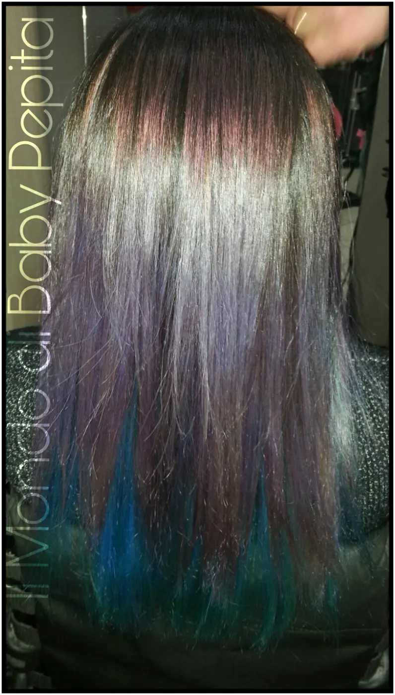
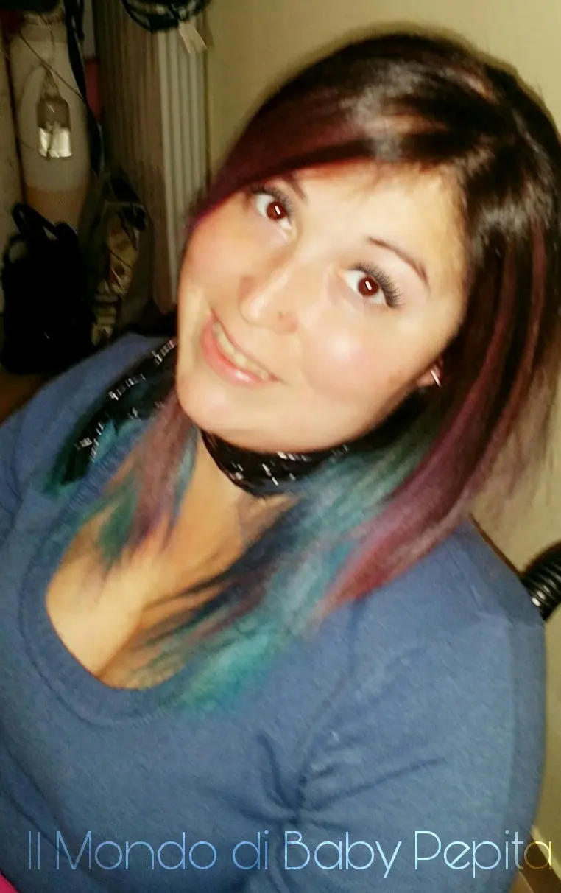

New look stravagante
Sempre più spesse ormai ci capita di vedere per strada o in giro chiome dai colori eccentrici, che fino a pochi anni fa eravamo abituati a vedere solo a carnevale o nei cartoni.
Negli ultimi anni invece anche i saloni di bellezza si sono adoperati e hanno introdotto colori sempre più strani, ed io voglio mostrarvi il mio nuovo look.
Ho dato una vera e propria svolta al mio colore di capelli, un pò un impatto shock rivoluzionando il mio aspetto.
Sicuramente le donne dello spettacolo sono più portate a questo tipo di cambiamenti shock ma non sono le sole, anche molte di noi amano cambiare spesso colore di capelli, quasi fosse una mania.
Io ho puntato su colori caldi ma certamente non semplici da portare. Diciamolo, non tutti farebbero blu e viola come tonalità di capelli. 
Io ho voluto invece stravolgere i miei canoni ed ho osato.
Ieri sono dunque andata dal parrucchiere per ben 5 ore tra decolorazione e colorazione delle varie sfumature ed è uscito un risultato bellissimo.

Le sfumature sono tra il viola, blu, glicine e Verduno alla fine delle punte.SONO DIVENTATA UN PAVONE
Fantastico l'insieme sei colori, super soddisfatta!
